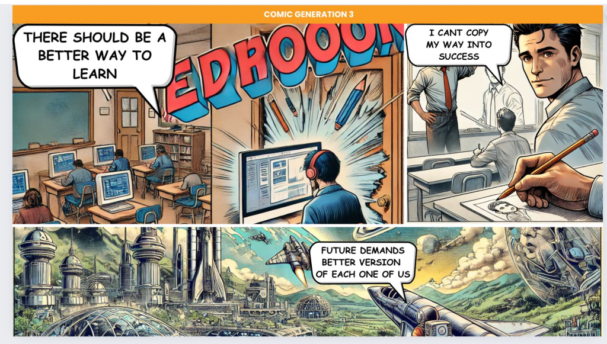
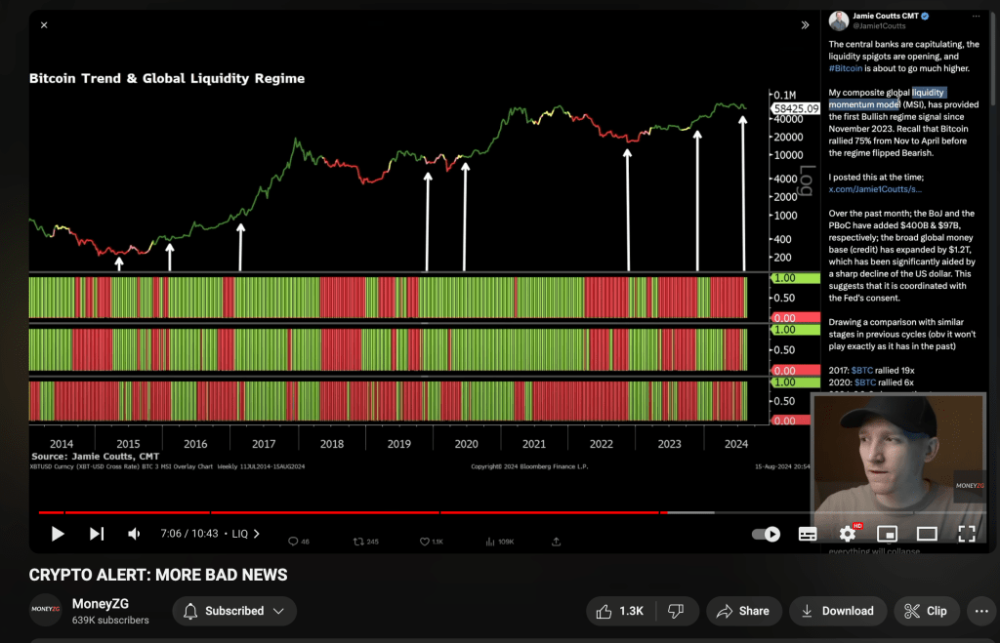

Navigating the Storm: From Day Trading to Creative Empowerment through Technology
Prologue: A World in Turmoil
As I sit down to write this, I can’t help but reflect on the turbulence that has shaped my journey. From the 2008 financial crisis that shook the world’s economy to the military coup attempt in Istanbul in 2017, the last two decades have been marked by events that have profoundly affected the global landscape. These events, alongside the unexpected arrival of the COVID-19 pandemic, have forced many of us to reevaluate our lives, careers, and the very essence of what we consider meaningful work.
In the early days of the pandemic, like many others, I found myself with an abundance of time and a desperate need to secure my financial future. This led me down the path of day trading—a world of quick decisions, high stakes, and relentless pressure. However, as the markets fluctuated and the adrenaline of the trades wore off, I began to question the purpose of it all. It was in this questioning that I found my true calling, one rooted not in the pursuit of profit but in the creative power of technology to close skill gaps and empower others.
Chapter 1: The Allure and Perils of Day Trading
When the COVID-19 pandemic struck, the world went into lockdown. The streets of London, usually bustling with life, became eerily silent. Working as an expat in the UK, far from my home country, I felt a profound sense of isolation. My contract work as a DevOps contractor had been steady, but the uncertainty of the future was unsettling. With the markets in turmoil, I was drawn to the idea of day trading. It seemed like an opportunity to take control of my financial destiny amidst the chaos.
The world of day trading is often glamorized—images of traders making quick fortunes with a few clicks of a mouse. But the reality is far more complex and, at times, harrowing. It is a world where fortunes can be made or lost in the blink of an eye. Every decision felt like a high-stakes gamble, where the outcome was as much about luck as it was about skill. The thrill of the trade, the surge of adrenaline, and the promise of financial gain were intoxicating, but the risks were equally immense.
Despite the early successes, I soon realized the inherent flaws in this pursuit. Day trading was a game of numbers, not creation. It was a zero-sum game where one person’s gain was another’s loss. There was no tangible value being created, no lasting impact. The stress and the mental toll began to outweigh the rewards, and I started to question the sustainability of this path.
Chapter 2: The Epiphany—Finding Meaning in Creativity
As the months dragged on, the monotony of day trading wore me down. I longed for something more—something that not only challenged me intellectually but also allowed me to contribute to the world in a meaningful way. It was during this time of introspection that I had an epiphany: true fulfillment comes not from the pursuit of profit but from the act of creation.
My background in technology had always been a source of passion for me. I had spent years working as a DevOps contractor during the bull markets and as a Site Reliability Engineer (SRE) during the bear markets. These roles had given me a deep understanding of the power of technology and its potential to solve real-world problems. However, it wasn’t until the pandemic that I realized how I could use my skills to make a difference.
The world was changing rapidly, and the pandemic had accelerated the need for digital skills. People were losing their jobs, industries were being disrupted, and the demand for new skills was higher than ever. I saw an opportunity to leverage technology to close these skill gaps, to empower individuals to learn and adapt in this new landscape. This was the creative outlet I had been searching for—a way to build something that could have a lasting impact.
Chapter 3: Building a New Path—Self-Learning Videos and Empowerment through Technology
With a renewed sense of purpose, I set out to build a platform focused on self-learning. The goal was simple: to create high-quality, accessible content that could help people acquire the skills they needed to thrive in a rapidly changing world. I envisioned a series of videos that would break down complex topics into manageable, easy-to-understand lessons. The focus was not just on technical skills but on fostering a mindset of continuous learning and adaptability.
The process of creating these videos was both challenging and rewarding. It required me to think deeply about how to communicate complex ideas in a way that was engaging and understandable. It was a creative process, one that allowed me to use my technical expertise in a way that felt meaningful and impactful. For the first time in months, I felt like I was truly contributing to something greater than myself.
The feedback from the early users of the platform was overwhelmingly positive. People were not only learning new skills but were also gaining the confidence to apply them in real-world scenarios. It was a powerful reminder of the transformative power of education and the role that technology can play in democratizing access to knowledge.
Chapter 4: The Expat Experience—Living and Working in the UK
As an expat living in the UK, my journey has been one of both challenge and opportunity. Moving to a new country is never easy, and the experience of adapting to a new culture, building a network, and navigating the complexities of the job market can be daunting. However, it has also been a period of immense growth.
Working as a DevOps contractor in the UK during bull markets, I witnessed firsthand the rapid pace of technological advancement and the demand for skilled professionals. These were the boom years, where opportunities seemed endless, and the tech industry was thriving. However, the shift to a bear market brought new challenges. As an SRE, the focus shifted from growth to stability, from innovation to efficiency. It was a stark reminder of the cyclical nature of the economy and the need to continually adapt.
The experience of living through these market cycles, combined with the uncertainty brought about by events like Brexit and the COVID-19 pandemic, has shaped my perspective on work and life. It has taught me the importance of resilience, adaptability, and the need to find meaning beyond the pursuit of profit.
Chapter 5: Reflections on the 2008 Financial Crisis and the Istanbul Coup Attempt
The 2008 financial crisis was a defining moment for many of us. It was a time when the world’s financial system was on the brink of collapse, and the effects were felt globally. For those of us in the tech industry, it was a period of uncertainty and upheaval. Jobs were lost, companies went under, and the future seemed uncertain. However, it was also a time of innovation, as new technologies and business models emerged in response to the crisis.
Similarly, the military coup attempt in Istanbul in 2017 was another event that had a profound impact on my life. As someone with connections to the region, the events of that night were deeply personal. It was a stark reminder of the fragility of political systems and the importance of stability. The uncertainty and fear that followed were palpable, but it also highlighted the resilience of the people and their ability to rebuild in the face of adversity.
These events, along with the challenges brought about by the pandemic, have shaped my worldview which turned me to an expat. They have reinforced my belief in the importance of creativity, innovation, and the need to empower individuals to take control of their own destinies.
Chapter 6: A New Vision for the Future—Closing the Skills Gap through Collective Creativity
As I look to the future, I am convinced that the key to addressing many of the challenges we face lies in closing the skills gap. The world is changing rapidly, and the skills that were relevant yesterday may no longer be relevant tomorrow. To thrive in this new landscape, we must focus on continuous learning and adaptability.
However, this cannot be achieved by taxing the rich or relying on traditional methods of education alone. The solution lies in empowering the masses to be creative, to leverage technology to learn, adapt, and innovate. This is not about following in the footsteps of someone like Gary Stevenson, who advocates for taxing the rich. Instead, it’s about enabling people to take control of their own futures by providing them with the tools and resources they need to succeed.
My vision is one where technology is used to democratize access to education, where anyone, regardless of their background, can learn the skills they need to thrive. This is not just about technical skills but about fostering a mindset of creativity, innovation, and continuous learning. By closing the skills gap, we can create a more equitable and prosperous future for all.
Epilogue: The Journey Continues
My journey from day trading to building a platform for self-learning has been one of discovery, growth, and transformation. It has taught me the importance of finding meaning in work, the power of creativity, and the potential of technology to transform lives. The road ahead is filled with challenges, but it is also filled with opportunities.
As I continue to build and expand my platform, I am guided by the belief that the way forward is through collective creativity and empowerment. By closing the skills gap and leveraging technology, we can create a world where everyone has the opportunity to succeed. This is the future I am working towards, and I invite you to join me on this journey.
Conclusion: The Power of Creativity in the Face of Adversity
The events of the past two decades have shown us that the world is an unpredictable place. From financial crises to political upheavals and global pandemics, we have faced challenges that have tested our resilience and adaptability. Yet, in the face of these challenges, we have also seen the power of creativity, innovation, and the human spirit.
As we move forward, it is essential to focus on empowering individuals to take control of their
Satisfaction vs Gambling


Garys Economics
Imported from rifaterdemsahin.com · 2024